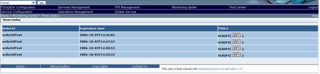

To view the list of the active timers of the selected service click on the "View the timer status" section link in the "Monitoring center" page. The browser should display a table listing all the active timers.

The table displayed includes the following information:
-
OrderId: SSE order identifier.
-
Expiration date: date of expiration of timer.
-
TOOLS: it allows displaying the script content. The
 icon allows displaying the script content in a tree format. The
icon allows displaying the script content in a tree format. The  icon allows displaying the script content in XML format.
icon allows displaying the script content in XML format.